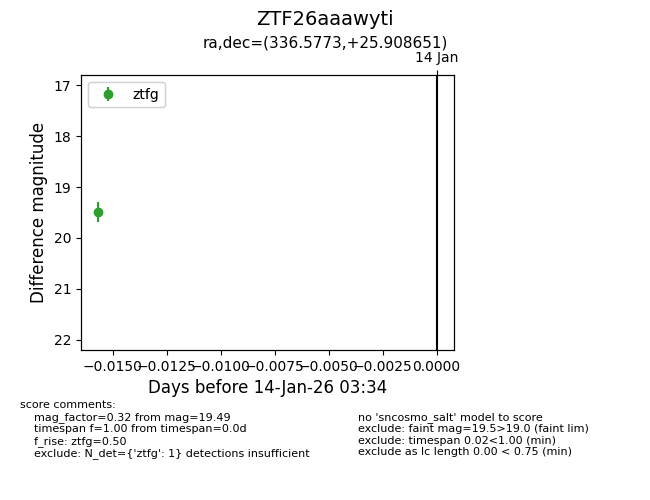
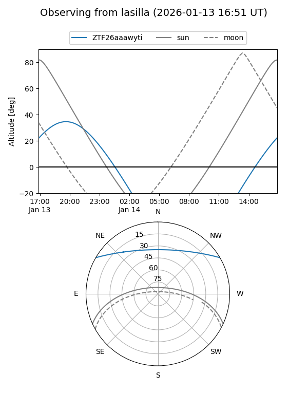
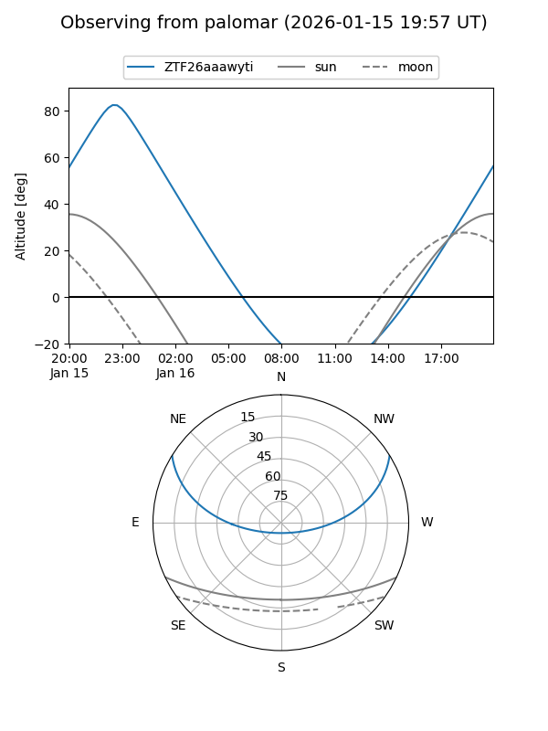

ZTF26aaawyti
Target ZTF26aaawyti at 2026-01-16 03:45
Aliases and brokers:
FINK: link
Lasair: link
ALeRCE: link
alt names
ZTF26aaawyti (ztf,fink_ztf)
Coordinates:
equatorial (ra, dec) = 336.5773,+25.90865
equatorial (HMS+DMS) = 22:26:18.55,+25:54:31.14
galactic (l, b) = (86.4379,-26.49286)
Flags:
Photometry:
last ztfg=19.49
1 ztfg detections
Lightcurve

Visibility


Additional plots